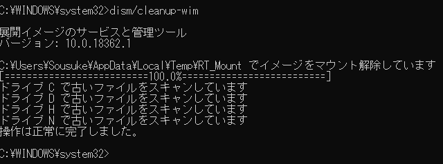

5/19
コンテンツを少し追加,一部レイアウト変更
6/16 20:46
フレーム追加
"21:06
新コンテンツ(ry)追加
7/4 コンテンツ一覧をトップと統合
8/4 ネットスケープのページを少し改修、ジオシティーズにバナー追加
RT Se7en Liteが展開したWindowsのファイルが残ってしまって消せない!!
管理者権限でコマンドプロンプトを開き,dism/cleanup-wimを実行
